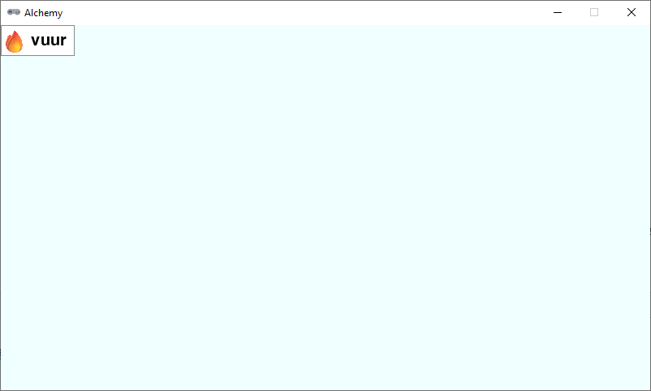
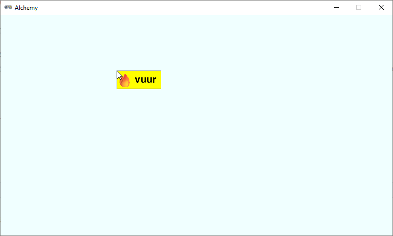
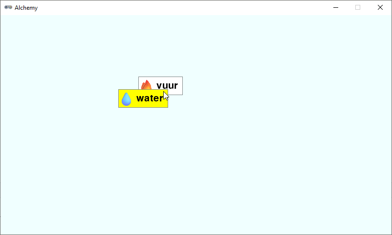

4.8. Drag and drop#
De speler moet element cards met de muis kunnen verslepen. In het Engels noem je dit drag and drop. Om deze functionaliteit te implementeren, gebruiken we de drie mouse event handlers van Pygame Zero:
on_mouse_down()on_mouse_move()on_mouse_up()
Meer informatie over deze functies vind je in de Pygame Zero documentatie:.
4.8.1. Workbench list#
In het volgende deel gaan we het spelvenster in twee delen splitsen. Aan de linkerkant komt een lijst met de elementen die de speler heeft ontdekt. Aan de rechterkant komt het werkgebied waar de speler elementen kan combineren. Dit werkgebied noemen we de workbench. Om bij te houden welke element cards zich in de workbench bevinden, maken we een lijst genaamd workbench.
26# DICTIONARIES AND LISTS
27
28elements = {}
29recipes = {}
30workbench = []
Voor het toevoegen van elementen aan een lijst maken we een nieuwe helper functie genaamd add_element_to_list():
47def add_element_to_list(element_id, lst, rect = None):
48 if rect == None:
49 rect = elements[element_id]['rect'].copy()
50 lst.append({
51 'id': element_id,
52 'rect': rect
53 })
Zoals je ziet, heeft de functie drie parameters:
element_id: de key van het element dat we willen toevoegen.lst: de lijst waaraan we het element willen toevoegen.rect: de rect van het element. Als deze waarde niet wordt meegegeven in de aanroep, krijgtrectde default waardeNone.
De eerste actie die de functie uitvoert, is controleren of de rect parameter de waarde None heeft. Als dat het geval is, wordt een kopie gemaakt van de rect van het element zoals dat in de elements dictionary staat. Vervolgens voegen we een dictionary toe aan de lijst. Deze dictionary bevat de id van het element en de rect van het element. Deze twee gegevens zijn namelijk voldoende om het element later weer te kunnen tekenen in de workbench.
Waarom een kopie van de rect?
Je vraagt je misschien af waarom we een kopie van de rect maken. Waarom zouden we niet gewoon zeggen:
49 rect = elements[element_id]['rect']
We maken een kopie omdat we de rect van het element in de workbench willen kunnen aanpassen zonder dat dit invloed heeft op de rect van het element in de elements dictionary. Als we geen kopie zouden maken, zou het aanpassen van de rect in de workbench ook de rect in de elements dictionary aanpassen.
Aan het hoofdprogramma voegen we tijdelijk twee regels toe om de functie te testen:
78# MAIN PROGRAM
79
80load_elements()
81calc_card_rects()
82add_element_to_list('fire', workbench)
83print(workbench)
Met regel 83 kunnen we in de console zien of de functie werkt. Als je het programma nu uitvoert, zou je in de console de volgende output moeten zien:
[{'id': 'fire', 'rect': <rect(0, 0, 91, 38)>}]
Verwijder regel 83 weer uit het programma en voeg onder de draw_element_card() functie een nieuwe functie toe die de elementen in de workbench tekent:
69def draw_workbench():
70 for card in workbench:
71 draw_element_card(card['id'], card['rect'].topleft)
Deze functie roepen we aan in de draw() functie. Vervang de aanroep draw_element_card('earth', (20,20)) in regel 75 door draw_workbench():
73def draw():
74 screen.fill('azure')
75 draw_workbench()
Run de code en je zou nu een element card van het element vuur moeten zien in de workbench.

4.8.2. Selecteren, slepen en loslaten#
Om bij te houden of de speler een element card aan het verslepen is, maken we twee nieuwe variabelen aan:
26# DICTIONARIES AND LISTS
27
28elements = {}
29recipes = {}
30workbench = []
31
32# VARIABLES
33
34dragging = False
35dragged = {}
De variabele dragging is een boolean die aangeeft of de speler een element card aan het verslepen is. De variabele dragged is een dictionary die de gegevens van het element dat de speler aan het verslepen is gaat bevatten.
Nu gaan we de drie mouse event handlers implementeren. We beginnen met de on_mouse_down() functie:
60# MOUSE EVENTS
61
62def on_mouse_down(pos, button):
63 global dragged, dragging
64 for card in workbench:
65 r = card['rect']
66 if r.collidepoint(pos):
67 dragged = {
68 'id' : card['id'],
69 'rect' : r
70 }
71 workbench.remove(card)
72 dragging = True
73 return
De on_mouse_down() functie wordt aangeroepen wanneer de speler op de muisknop klikt. De functie loopt alle element cards in de workbench na en controleert of de muisklik binnen de rect van een element card valt. Als dat het geval is, wordt de dragged dictionary gevuld met de gegevens van het element. Vervolgens verwijderen we het element uit de workbench. Dat lijkt misschien een beetje vreemd. Je kunt dit zien alsof de speler het element van de werkbank pakt, waardoor het in de lucht zweeft en niet op de werkbank ligt. Straks in de on_mouse_up() functie zullen we het element weer toevoegen. In regel 72 wordt de dragging variabele op True gezet om aan te geven dat de speler een element card aan het verslepen is. De return in regel 73 zorgt ervoor dat we de functie on_mouse_down() direct verlaten (en dus ook niet verder gaan met de for loop) zodra we een element hebben gevonden dat de speler heeft aangeklikt.
In de on_mouse_move() functie gaan we controleren of de speler een element aan het verslepen is. Als dat het geval is, verplaatsen we de rect van het element naar de positie van de muis:
75def on_mouse_move(pos):
76 if dragging:
77 dragged['rect'].x = pos[0]
78 dragged['rect'].y = pos[1]
De parameter pos bevat de positie van de muis, opgeslagen in een tuple. De x-coördinaat van de muis is de eerste waarde in de tuple, de y-coördinaat de tweede waarde. Met pos[0] en pos[1] krijgen we dus respectievelijk de x- en y-coördinaat van de muis.
Tenslotte implementeren we de on_mouse_up() functie. Deze functie wordt aangeroepen wanneer de speler de muisknop loslaat. We controleren of de speler een element aan het verslepen is en voegen het element weer toe aan de workbench:
80def on_mouse_up():
81 global dragging
82 if dragging:
83 dragging = False
84 add_element_to_list(dragged['id'], workbench, dragged['rect'])
85 dragged.clear()
Als het goed is, spreekt deze code voor zich. We zetten de dragging variabele op False, voegen het element weer toe aan de workbench (nu met de rect van de huidige positie) en legen de dragged dictionary.
Run de code om te zien dat je het element kunt verslepen. Er is echter nog wel iets vreemds aan de hand: tijdens het slepen is het element onzichtbaar! Dit komt doordat tijdens het slepen het element zich niet in de workbench lijst bevindt en dus ook niet wordt getekend. Voeg het volgende if statement toe aan de draw() functie:
105def draw():
106 screen.fill('azure')
107 draw_workbench()
108 if dragging:
109 draw_element_card(dragged['id'], dragged['rect'].topleft, bgcolor='yellow')
Dit zorgt ervoor dat het element dat de speler aan het verslepen is, wordt getekend met een gele achtergrond. Dit maakt het ook makkelijker om te zien waar het element zich bevindt tijdens het slepen.

Valt je iets op tijdens het verslepen van de element card? Wanneer je start met slepen, verspringt de card zodat de linkerbovenhoek van de card precies op de muispositie komt te liggen. Dat komt door de twee regels in de on_mouse_move() functie:
77 dragged['rect'].x = pos[0]
78 dragged['rect'].y = pos[1]
De x en y van een rect verwijzen altijd naar de linkerbovenhoek van de rect. Om te voorkomen dat de card verspringt, moeten we de positie van de muis ten opzichte van de linkerbovenhoek van de card berekenen. Voeg de volgende regel toe aan de on_mouse_down() functie:
62def on_mouse_down(pos, button):
63 global dragged, dragging
64 for card in workbench:
65 r = card['rect']
66 if r.collidepoint(pos):
67 dragged = {
68 'id' : card['id'],
69 'rect' : r,
70 'click_pos' : (pos[0] - r.x, pos[1] - r.y)
71 }
72 workbench.remove(card)
73 dragging = True
74 return
En wijzig de twee regels in de on_mouse_move() functie naar:
76def on_mouse_move(pos):
77 if dragging:
78 dragged['rect'].x = pos[0] - dragged['click_pos'][0]
79 dragged['rect'].y = pos[1] - dragged['click_pos'][1]
Wat gebeurt hier precies? In regel 70 berekenen we met pos[0] - r.x en pos[1] - r.y de horizontale en de verticale afstand tussen de muispositie en de linkerbovenhoek van de card. Deze afstanden slaan we op als een tuple in de dragged dictionary onder de key click_pos. In de on_mouse_move() functie gebruiken we de afstanden weer om de juiste positie van de linkerbovenhoek van de card te berekenen. Nu verspringt de card niet meer wanneer je begint met slepen.
Om nog iets beter te testen of de drag and drop goed werkt, voegen we een tweede element toe aan de workbench:
117# MAIN PROGRAM
118
119load_elements()
120calc_card_rects()
121add_element_to_list('fire', workbench)
122add_element_to_list('water', workbench)
Test de code door de twee elementen te verslepen en let vooral op wat er gebeurt als de twee elementen elkaar overlappen. De element card die bovenop ligt, is de card die je als laatste hebt versleept. Wanneer je echter met de muis klikt op een positie die binnen beide elementen valt, wordt niet het bovenste element geselecteerd, maar het onderste. Dat is niet wat je als speler zou verwachten. Kun je zelf bedenken wat de oorzaak hiervan is?
De functie draw_workbench() tekent de element cards in de volgorde waarin ze zijn toegevoegd aan de lijst. Het laatst toegevoegde element wordt dus bovenop de andere elementen getekend. Bij het selecteren van een element in de on_mouse_down() functie wordt de lijst echter van het begin tot het einde doorlopen en het eerste element waarmee een collision wordt gedetecteerd, wordt geselecteerd. Dit is dus het element dat het eerst in de lijst staat, en dat is het onderste element. We kunnen dit oplossen door in on_mouse_down() de lijst in omgekeerde volgorde te doorlopen:
62def on_mouse_down(pos, button):
63 global dragged, dragging
64 for card in reversed(workbench):
65 r = card['rect']
66 if r.collidepoint(pos):
67 dragged = {
68 'id' : card['id'],
69 'rect' : r,
70 'click_pos' : (pos[0] - r.x, pos[1] - r.y)
71 }
72 workbench.remove(card)
73 dragging = True
74 return
Test nogmaals het programma. Nu zou alles moeten werken zoals je verwacht: het bovenste element wordt geselecteerd wanneer je erop klikt.
